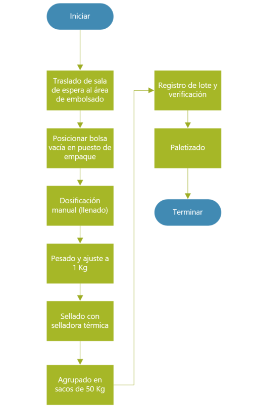
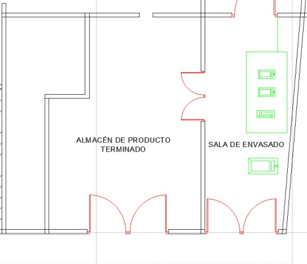
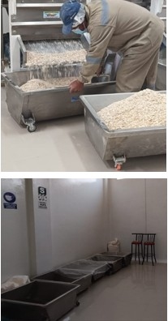
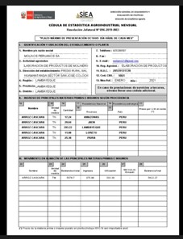

Datos Generales
| Empresa: | Procesadora Agroindustrial Nuevo Imperio E.I.R.L. |
|---|---|
| Área: | Producción |
| Operación: | Embolsado |
| Diagrama Nº: | 03 |
| Objetivo: | Estimar tiempos y estandarizar las actividades de envasado, sellado y control de lotes del producto final. |
| Método: | Actual |
| Operador(es): | Operario de Producción |
| Elaboró: | ___ / Fecha: 21/10/2025 |
| Aprobó: | ___ / Fecha: 23/10/2025 |
I. Contenido de la Operación
| Contenido | Descripción / Detalles |
|---|---|
| Análisis de operación | Proceso de envasado del producto final, desde el traslado desde el área de espera hasta el paletizado, garantizando peso, sellado y trazabilidad. |
| Principales pasos |
1. Traslado de producto del área de espera al área de embolsado. 2. Posicionamiento de bolsas vacías en el puesto de empaque. 3. Dosificación manual (llenado). 4. Pesado y ajuste a 1 kg. 5. Sellado con selladora térmica. 6. Agrupado en sacos de 50 kg. 7. Registro de lote y verificación por saco. 8. Paletizado. |
| Tiempo de operación | 1.478 min total por ciclo (ver diagrama de flujo). |
| Puntos clave | Control del peso exacto, sellado hermético, identificación del lote y orden de empaquetado. |
| Razón para puntos clave | Garantizar la uniformidad, presentación comercial y trazabilidad del producto terminado. |
| Herramientas | Báscula de precisión, selladora térmica, palas dosificadoras, palet, cinta de loteado. |
| Equipo de seguridad | Mascarilla, guantes, protector auditivo, botas antideslizantes. |
| Concepto por inspeccionar | Peso unitario, hermeticidad del sello, integridad del empaque, codificación de lote, limpieza de área. |
| Grado de importancia | Alta |
| Frecuencia | Cada lote de 5000 unidades |
| Método de inspección | Muestreo por lote, verificación visual y control de peso. |
| Norma de aceptación | Peso 1.000 ± 0.005 kg, sello íntegro sin fugas, código de lote visible y legible. |
| Tipo de registro | Registro en hoja de operación, control de peso y planilla de producción diaria. |
II. Diagramas y Evidencias
| Diagrama de Proceso | Layout y Foto del Lugar |
|---|---|
|

Diagrama Nº 03: Flujo del proceso de embolsado y control de lote. |
Layout de UbicaciónFoto del Lugar |
Descripción del Proceso
El proceso de embolsado comprende el llenado, pesaje, sellado y agrupado del producto final, asegurando precisión en el peso, integridad del empaque y trazabilidad del lote. Cada etapa está orientada a garantizar la presentación comercial y la inocuidad del producto terminado antes de su almacenamiento o despacho.
Hoja de Procedimiento Estándar
| Actividad | Punto clave | Razón | Ayuda visual |
|---|---|---|---|
| Traslado de sala de espera al área de embolsado | Transportar el producto en coches limpios y secos, cubiertos para evitar contaminación. Verificar que el área de embolsado esté limpia y libre de residuos antes de iniciar. | Prevenir contaminación cruzada y garantizar que el producto llegue en condiciones higiénicas adecuadas para el envasado. |  |
| Posicionar bolsa vacía en puesto de empaque | Seleccionar bolsas en buen estado, sin perforaciones ni humedad. Colocarlas correctamente en la tolva o soporte antes del llenado. | Evitar pérdidas de producto, fugas o sellados defectuosos que afecten la presentación final. | |
| Dosificación manual (llenado) | Llenar la bolsa con la cantidad aproximada, evitando derrames. Mantener el flujo constante de producto y limpiar el área de trabajo después de cada lote. | Asegurar uniformidad en la cantidad envasada y mantener el orden y limpieza. | |
| Pesado y ajuste a 1 kg | Pesar cada bolsa en báscula calibrada. Ajustar el contenido hasta cumplir con el estándar de 1.000 ± 0.005 kg. Registrar los valores en la hoja de control. | Garantizar precisión del peso neto y cumplimiento de normas comerciales y de calidad. | |
| Sellado con selladora térmica | Regular la temperatura y tiempo de sellado según tipo de bolsa. Revisar los primeros 10 sellos del lote y corregir si hay fugas o deformaciones. | Asegurar un cierre hermético que mantenga la frescura del producto y evite contaminación durante el almacenamiento. | |
| Agrupado en sacos | Colocar las bolsas terminadas en sacos de 50 kg, asegurando que cada uno contenga bolsas del mismo lote. Sellar y etiquetar correctamente. | Facilitar el control del inventario y la trazabilidad por lote durante almacenamiento y despacho. | |
| Registro de lote y verificación por saco | Registrar el número de lote, cantidad y fecha en la hoja de control. Verificar legibilidad de la etiqueta y el código. | Mantener trazabilidad completa y cumplir con los requisitos de control de calidad e inocuidad alimentaria. |  |